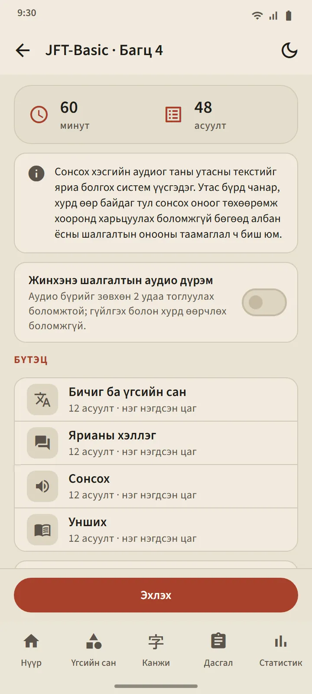
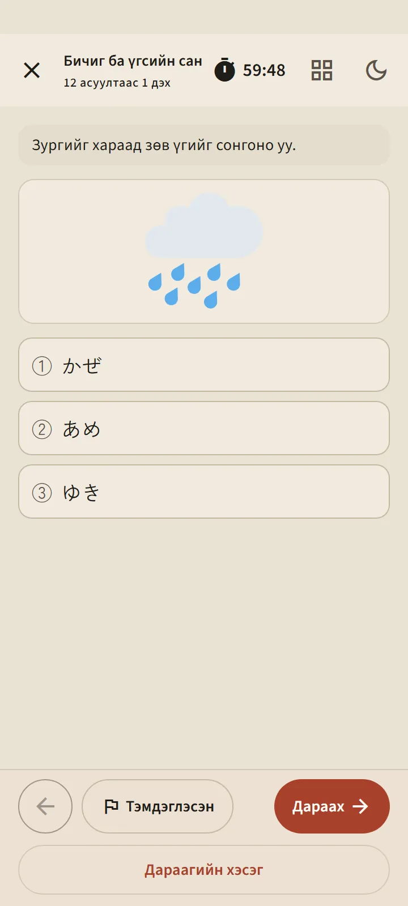
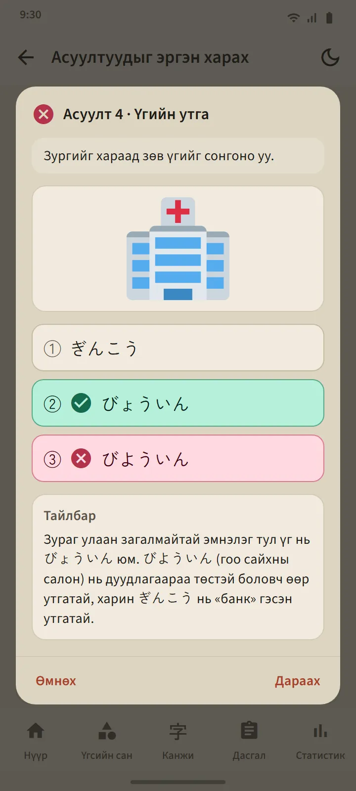

Зургаан түвшин, 24 багц
Дасгал табын түвшний карт бүр түвшний хуудсыг нээнэ: Эхлэх товч, дугаарласан багцын хавтан, түүх. Бүх багцыг дуусгамагц Холимог дасгал нээгдэж, таны урьд харж үзээгүй асуултуудыг түрүүнд тавина. Шинэ багц аппын шинэчлэлтээр ирнэ.
| Шалгалт | Багц | Багц дахь асуулт | Хугацаа |
|---|---|---|---|
| JFT-Basic | 8 | 48 | 60 минут |
| JLPT N5 | 8 | 68 | 90 минут |
| JLPT N4 | 2 | 85 | 115 минут |
| JLPT N3 | 2 | 102 | 140 минут |
| JLPT N2 | 2 | 107 | 155 минут |
| JLPT N1 | 2 | 101 | 165 минут |


Асуултын хэлбэр жинхэнэ шалгалтыг дагана
JFT-Basic-ийн асуулт гурван хариултын сонголттой (хэл зүйд дөрөв), суралцагчийн хэлээр нөхцөл байдал ба заавартай, албан ёсны жишиг асуултуудын адил олон асуулт зурагтай. JLPT-ийн асуулт дөрвөн хариултын сонголттой, түвшинд тохирсон фуриганатай, олон хэлбэрийн уншлагын бичвэртэй: богино түүх, тэмдэглэл, мэдэгдэл, зурвас, имэйл, мэдээллийн хүснэгт. Багц бүрийг нийтлэхээс өмнө хянадаг бөгөөд албан ёсны асуултыг хуулаагүй.
Эхлэхээс өмнө танилцуулгын дэлгэц тухайн багцын бүтцийг харуулна: хэсгүүд, асуултын тоо, хугацаа. Хугацаа жинхэнэ шалгалтыг дагана: JFT-Basic-д нийлмэл нэг хугацаа, JLPT-д хэсэг тус бүрт хугацаа. Дараагийн хэсэг рүү шилжсэний дараа өмнөх хэсэг хаагдана, яг шалгалтын танхим шиг. Эргэлзсэн асуултаа тэмдэглэж, түр гарч болно (цаг үргэлжлэн явна), Дасгал табаас үргэлжлүүлж болно.


Утасныхаа япон дуу хоолойгоор сонсох
Сонсголын бичвэрийг таны утасны япон текст-яриа хувиргагч уншина, ярьж буй хүн бүрт өөр дуу хоолойгоор. Жинхэнэ шалгалтын адил хариултын сонголтыг зөвхөн сонсдог, бичдэггүй; JFT-Basic ба N5 зурагтай сонголт ашигладаг. «Жинхэнэ шалгалтын аудио дүрэм» сэлгэгч тоглуулалтыг жинхэнэ шалгалтад зөвшөөрдөг хэмжээнд хязгаарлана: JFT-Basic-д хоёр удаа, JLPT-д нэг удаа.
Дуу хоолой утас бүрээс ирдэг тул чанар төхөөрөмжөөр ялгаатай; утсанд япон дуу хоолой хараахан байхгүй бол апп хэрхэн суулгахыг харуулах бөгөөд дуу хоолой суулгатал сонсголын хэсгийг алгасна.

Албан ёсны шатлалаар үр дүн, дараа нь асуулт бүрийн тайлбар
JFT-Basic-ийн үр дүнг 10–250 шугам дээр 145, 175, 200 тэмдэг, тэдгээрийн түвшний нэр A1, A2.1, A2.2, мөн түвшин бүр жинхэнэ шалгалтад юунд хэрэглэгддэгийн хамт зурна. JLPT-ийн үр дүн онооны хэсэг бүрийг түүний доод босготой харьцуулан харуулдаг, учир нь жинхэнэ шалгалтад нэг хэсэг доод босгоос доош байвал тэнцэхгүй. Хоёулангийнх нь хэсэг ба асуултын төрөл тус бүрийн зөв хариултын хувьтай.
Асуултуудыг эргэн харах товч асуулт бүрийг таны хариулт, зөв хариулт, тайлбартай нээнэ; сонсголын асуултад бичвэр нь бас гарна. Тайлбар 12 хэлээр бий. Түвшин бүрийн түүх сүүлийн оролдлогуудыг хадгалах бөгөөд онооны график Статистик таб дээр байна.
Эдгээр оноо нь ахицаа хянах тооцоо төдий, албан ёсны үр дүнгийн таамаг биш.
Хэв загвар нь хичээлтэй хэл зүйн асуултууд "Энэ хэв загварыг судлах"-аар тухайн хичээл рүү шууд холбогдоно.


Үнэгүй ба Premium
Бүх багц үнэгүй хувилбарт нээлттэй. Эхлэх товчийг дарсны дараа тухайн түвшний дараагийн оролдлого 7 өдөр түгжигдэнэ; бусад түвшин нээлттэй хэвээр, түүх ба тайлбар хэзээ ч түгжигдэхгүй. Түгжээтэй байхад зар үзэж нэмэлт нэг оролдлогыг нээж болно. Premium-д завсарлага байхгүй. Асуултын дэлгэцэд хэн нэгэнд ч зар хэзээ ч гарахгүй.